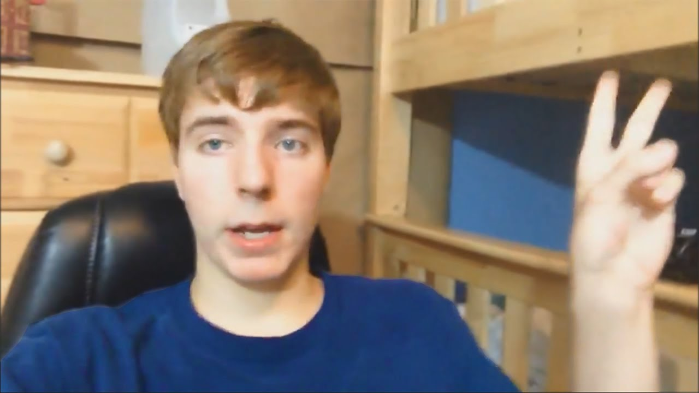
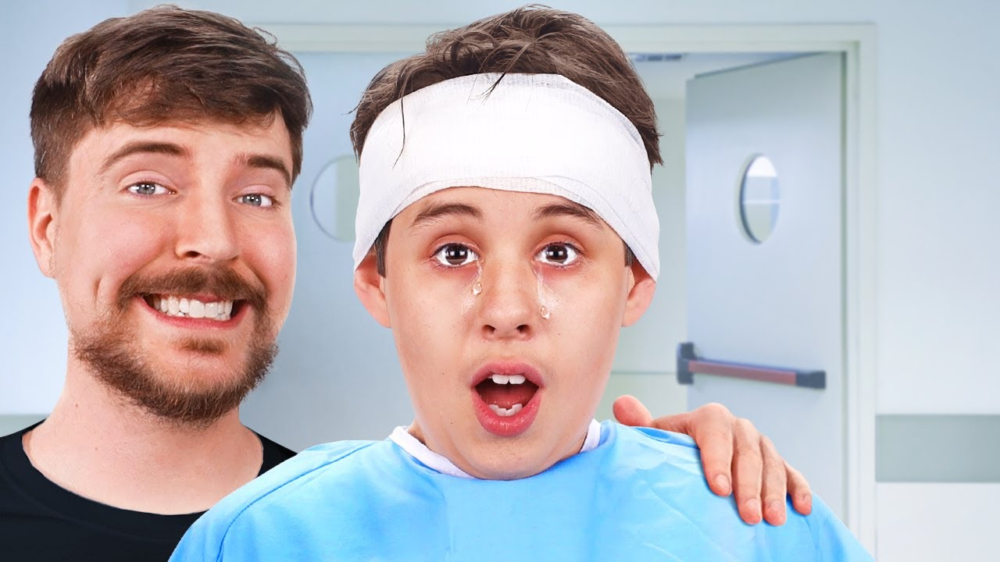

Um anjo entre nós
MrBeast, nome real Jimmy Donaldson, nascido em 7 de Maio de 1998, em Kansas, Estados Unidos, é um Youtuber genial que tem mais de 125 milhões de inscritos e mais de 15 bilhões de views. Em 2022 ele foi considerado o youtuber que mais ganhou dinheiro no ano./p> 
O que faz ele ser especial?
Ele tentou ficar famoso desde quando ele começou o seu canal no Youtube. Ele tentou várias vezes, mas não conseguia. Mas um dia, ele fez um vídeo chamado "Falando Pewdiepie 100.000", que ficou popular rápidamente, e aí ele percebeu que consegue chamar atenção de pessoas faznedo coisas mais absurdas.
Com o tempo, ele foi patrociano por outras empresas, e começou a investir mais dinheiro como canal. Um de seus vídeos é "O último a tirar a mão da casa, fica com a casa!". Com o tempo, ele foi crescendo muito rapidamente com esses vídeos.
Porque é tão adorado?
Mr.Beast começou a investir maior parte do seu dinheiro ajudando pessoas, dando dinheiro para pessoas por fazerem poucas coisas ou apenas dando dinheiro porque sim, chrgando a dar um trocado de até 10.000 dólares.
Recentemente, ele fez um vídeo chamado "1.000 cegos vêem pela primeira vez!", onde ele pagou cirurgias para pessoas conseguirem exergar pela primeira vez.